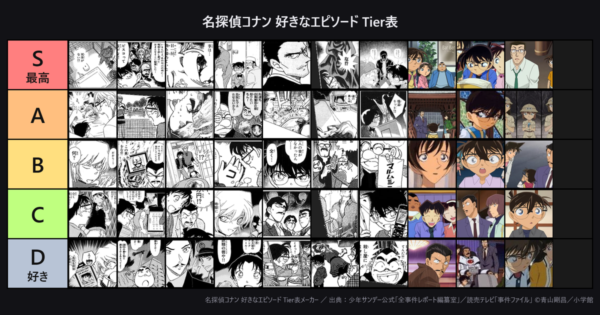
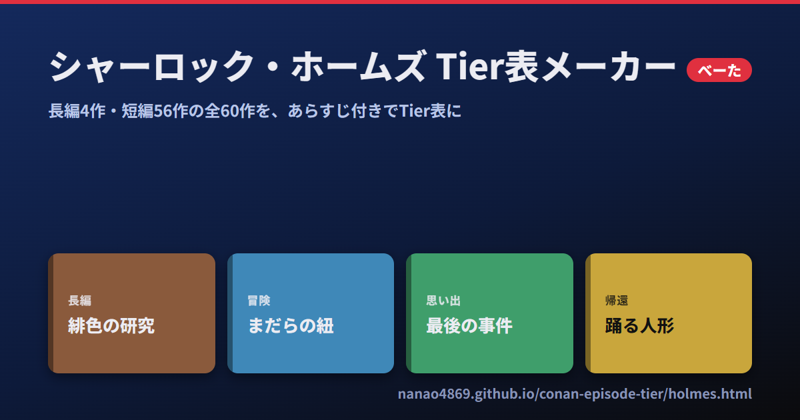
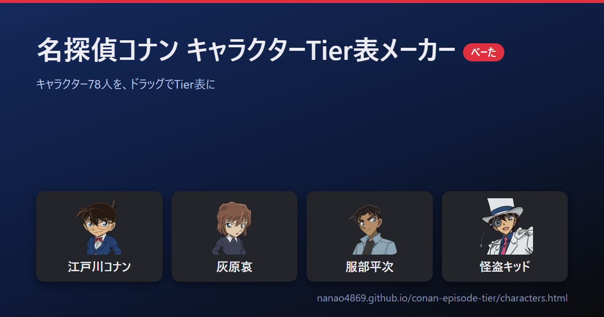

名探偵コナン 主題歌Tier表メーカー ©青山剛昌／小学館
バックアップや、他の端末への引き継ぎに使えます
リンクを開くと、友達にも同じ表が表示されます（表の中身はリンクに入っていて、サーバーには送られません）。Xへの投稿は上の「Xに投稿」からもできます。

コナン エピソードTier表メーカー マンガ333事件＋アニメオリジナル471話から、好きなエピソードのTier表が作れます。
シャーロック・ホームズ Tier表メーカー べーた 長編4作・短編56作の全60作を、あらすじやWikipedia・青空文庫へのリンク付きでTier表にできます。
コナン キャラクターTier表メーカー べーた キャラクター78人を、ドラッグでTier表に並べられます。 コナン自己紹介カードメーカー べーた
名探偵コナンの自己紹介カードを作って、画像で保存・Xに投稿できます。
コナン自己紹介カードメーカー べーた
名探偵コナンの自己紹介カードを作って、画像で保存・Xに投稿できます。